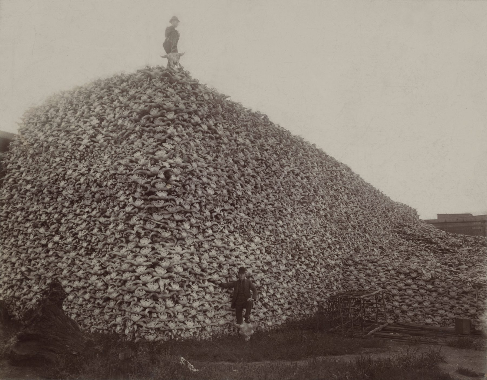

Meanderings & Digressions · Data stories · August 2020
The Sinister Source of Our Conservation Funding
Fewer hunters, more money, and who really pays for the trail

A pile of American bison skulls waiting to be ground into fertilizer, around 1892.I grew up in Morningside Heights, and much of my early exposure to nature beyond the concrete jungle came from the American Museum of Natural History, a few blocks from my elementary school, P.S. 87. As a kid I thought the museum was a place of wonder: marble halls housing dinosaurs, blue whales, and seemingly every animal that had ever walked the earth.
The one I always stopped at was the Tasmanian tiger. It has been declared extinct, though a part of me likes to think it is just hiding in the forests of Tasmania. The cause of its extinction is an easy one to guess. We hunted it until the only evidence left was a few grainy films and the taxidermy I stood across from so many times.

What’s odd is who stood out front. The statue at the museum’s entrance was of Theodore Roosevelt, a president who loved to hunt and who also ushered in an era of American conservation that brought many species back from the brink. As a child I could not work out how one man could be both.
Hunting as conservation?
Roosevelt protected roughly 230 million acres of public land.The U.S. Forest Service, 150 national forests, 51 bird reserves, 5 national parks and 18 national monuments, by the National Park Service’s count in FDR’s Conservation Legacy. His fifth cousin Franklin built on it with the Civilian Conservation Corps and an expanded Park Service. The approach they started is now called the North American Model of Wildlife Conservation, and it is widely regarded as one of the world’s most successful.
A key piece of that model is the Pittman-Robertson Act, which FDR signed in 1937. It put an excise tax on hunting equipment, firearms and ammunition included, and earmarked the money for wildlife. The idea is known as pay-to-play: the people who use the resource pay for its upkeep.
I had no idea any of this existed until a hunter told me. At the time I was living in Portland, Oregon, and spending my weekends backpacking. I struck up a conversation with a hunter on the trail, and as we parted he said, “Hope you enjoy your time out here. Maybe one day you guys will pay for it.”He was joking, mostly. Colorado once ran a whole ad campaign on the same point, called Hug a Hunter. I asked what he meant, and he explained the tax on his gear.
That conversation resolved the Roosevelt puzzle for me. It also sent me looking for the numbers.
Pittman-Robertson money apportioned to the states each fiscal year, 1940 to 2018, in millions of 2012 dollars. The years since 2008 are in orange. Hover over the line for any year.For most of its 79 years the fund grew slowly and steadily, from 18 million dollars in 1940 to an average of 282 million a year in the 2000s. Then it took off. It peaked at 779 million in 2014 and averaged 733 million a year from 2013 to 2017.
So pay-to-play has been remarkably successful. The trouble is the people it depends on.
Fewer hunters, more money
The traditional American hunter is disappearing. In 1991, 7.3 percent of Americans hunted. By 2016 it was 4.4 percent.The figures come from NPR’s Decline in Hunters Threatens How U.S. Pays for Conservation, which is also where I first read about the worry. A tax on hunters should be shrinking along with them.
Oddly though, it isn’t.
| Americans who hunt | Apportioned, $M | |
|---|---|---|
| 1991 | 7.3% | $229 |
| 1996 | 6.9% | $226 |
| 2001 | 5.9% | $236 |
| 2006 | 5.4% | $296 |
| 2011 | 5.6% | $378 |
| 2016 | 4.4% | $736 |
Over twenty-five years the share of Americans who hunt fell by 40 percent, and the money raised by taxing them grew to 3.2 times what it had been. The tax rate did not change. Somebody else was paying.
Why would this be the case?
The tax does not ask what a gun is for. It is collected on an AR-15 bought for self-defense the same way it is collected on a deer rifle.
Americans bought an estimated 5.8 million guns in 2000 and 16.7 million in 2016.Sales are not reported directly. These are BuzzFeed News estimates built from FBI background checks. The conservation money follows the same shape, one year behind. Sales passed 14 million in 2012, and the 2013 apportionment jumped from 523 to 747 million dollars.
The fit is close. From 2000 to 2017 the correlation between gun sales and the next year’s apportionment is 0.98.Against the same year’s apportionment it is 0.92. My reading of the lag is that tax collected in one year is handed to the states in the next. Eighteen years is not much, and two rising lines will always correlate, so I would not lean on the number. The shape is the evidence: the same steps, in the same order.
It would be reasonable to assume, then, that much of the money comes from firearms bought with no intent to hunt. The surge is most likely driven by fear of stricter gun laws, which is why sales spike after elections and after mass shootings. The biggest single-year jump in the fund followed 2012, the year of Sandy Hook.AR-15 owners hold at least three of the rifles on average and spend more than $400 accessorizing each one, according to industry research cited by the Washington Post.
Here’s the uncomfortable part. The trails I hike and the species I root for are paid for, in large part, by a market that booms when people are afraid.
A weak foundation
However you feel about hunting or about guns, the two together make a shaky base for one of the largest sources of wildlife funding in the country. One is in long decline. The other swings with the news. After 2016 sales fell by a quarter in a single year, and the 2018 apportionment was 611 million dollars, down from 779 million at the peak.
Both the potential for market-based fluctuation of the excise tax structure and the public benefit nature of Pittman-Robertson have led some stakeholders to propose amending the act to include a funding source that they argue is more stable and not solely reliant on hunters and recreational shooters.
One option is to finish what pay-to-play started. Hikers and birdwatchers use trails and refuges that hunters and gun buyers paid for, and our boots and binoculars are not taxed the way a rifle is. A small excise tax on the kind of gear sold at REI, tents and backpacks and climbing equipment, would put the rest of us into the model. It is usually called a backpack tax.
With almost 30,000 species facing extinction, the funding question is not an abstract one.

The hunter on the trail was right. Maybe one day we should pay for it.